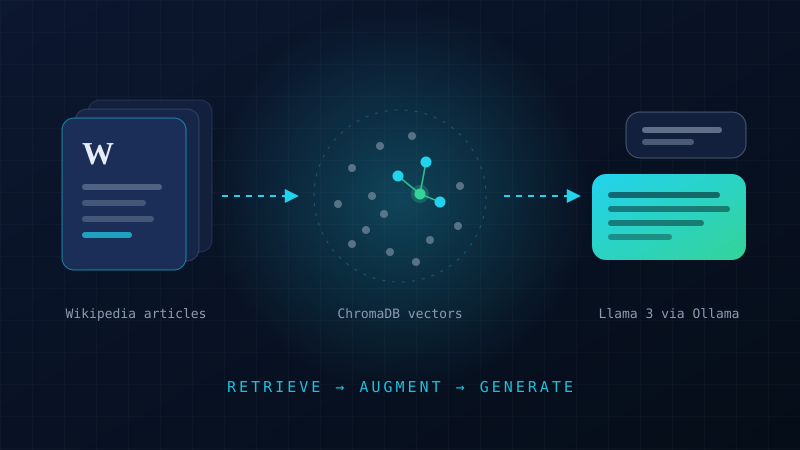
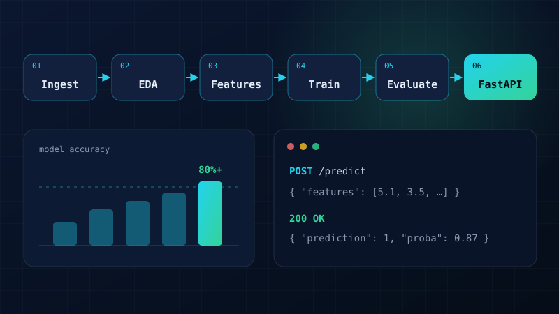

End-to-End ML Pipelines
Ingestion, EDA, feature engineering, training and evaluation — shipped as one reproducible workflow.
Open to AI/ML & Flutter opportunities
AI/ML Engineer, Flutter App Developer, LLM & RAG Specialist, Cross-Platform Mobile Developer
I build end-to-end ML pipelines and RAG/LLM applications — from EDA and model training to FastAPI deployment — and ship cross-platform Flutter apps backed by Firebase, including a published Play Store app with 100+ downloads.
const sidraProfile = {
name: "Sidra",
role: "AI/ML Engineer & Flutter Developer",
specialization: ["Mobile App Development", "AI/ML & RAG Pipelines"],
skills: {
mobileAppDev: ["Flutter SDK", "Dart", "Firebase", "Firestore", "Crashlytics"],
aiAndML: ["Python", "Scikit-learn", "LangChain", "ChromaDB", "Ollama", "Llama 3"],
backendAndApis: ["FastAPI", "RESTful APIs", "Firebase Auth"],
deploymentAndTools: ["Google Play Store", "Git", "GitHub", "Agile/Scrum"]
},
highlights: "Published Play Store App (100+ Downloads) | 80%+ ML Model Accuracy"
};01 About Me
I'm an AI/ML Engineer and Flutter developer. I turn raw data into production-ready models — owning the full lifecycle from preprocessing and EDA through training, tuning, and FastAPI deployment — and turn ideas into cross-platform mobile apps.
At NETSOL Technologies, I engineered 3+ production-ready ML pipelines and trained Logistic Regression and KNN classifiers on 1,000+ record datasets, reaching 80%+ accuracy through hyperparameter tuning and cross-validation. Before that, at Headstarter AI, I delivered AI/ML milestones across weekly sprints as part of a 4-member agile team.
Beyond classical ML, I build RAG and LLM applications — like a fully local Wikipedia chatbot powered by LangChain, ChromaDB and Llama 3. On the mobile side, I ship Flutter apps backed by Firebase Auth, Firestore and Crashlytics, including a published Google Play app with 100+ downloads. I'm currently architecting SheCan AI, a recommendation engine connecting women in Pakistan with freelance and gig work.
My current research asks whether LLMs generate accessible interfaces for Urdu speakers — measuring right-to-left failures in AI-generated UIs against WCAG.
Ingestion, EDA, feature engineering, training and evaluation — shipped as one reproducible workflow.
Local retrieval-augmented chatbots built with LangChain, ChromaDB, Ollama and Llama 3.
Flutter & Dart apps with Firebase Auth, Firestore and Crashlytics — published on Google Play.
Trained models exposed as scalable FastAPI REST endpoints for real-time inference.
02 Experience
From production ML pipelines to agile AI teams and community workshops.
NETSOL Technologies Pakistan
Headstarter AI
ACM UET Lahore
03 Featured Projects
LLM & RAG apps, Flutter mobile platforms, AI-powered web apps and production ML pipelines.

Fully LocalGenAI · RAG
A fully local Retrieval-Augmented Generation chatbot that answers questions using information retrieved from Wikipedia articles, combining vector search with LLM-based response generation.
Flutter · ML · Social Impact
An AI-powered gig recommendation platform: an ML-driven engine that matches women in Pakistan to freelance and gig opportunities based on their skills, interests, and availability.

80%+ AccuracyML Pipeline · MLOps
A full ML pipeline covering data preprocessing, EDA, feature engineering, model training and evaluation — with the final model deployed as a live FastAPI endpoint.
Flutter · FastAPI · Next.js
A freight and transport platform connecting shippers, fleet owners and drivers — digital load posting and offers, live trip tracking, payments and accounting, with cross-border rules between the UAE and Saudi Arabia.
Web App · GenAI
A local-first household budgeting app for Pakistani families — track monthly expenses, manage the pantry and grocery list, and generate practical weekly meal plans with Gemini.
04 Research
Measuring where AI-generated interfaces break for Urdu speakers — and whether a single prompt can fix it.
Developers already know that LLMs tend to mishandle right-to-left (RTL) languages, yet studies of the accessibility of LLM-generated interfaces use English prompts and left-to-right layouts — even the one that compares prompt languages (English vs. Portuguese) stays within an LTR language. This study measures the gap rigorously: the same UI tasks are prompted in Urdu and in English, every generated page is rendered and audited, and each failure is mapped to WCAG in a taxonomy of RTL accessibility problems.
Compares axe-core violation counts on each Urdu page and its English twin, using a Wilcoxon signed-rank test on the paired differences.
Six custom checks catch what axe-core misses. Results are reported as the share of pages affected, per failure type and per model.
Adds a short RTL-aware instruction to the Urdu prompts, regenerates the pages, and measures how much each failure type drops.
lang missing or not ur; English spans inside Urdu left untagged.
dir="rtl".
margin-left or text-align: left instead of logical properties like margin-inline-start.
WCAG has no dedicated right-to-left success criterion, so layout checks are mapped to the closest reading-order and layout criteria.
05 Skills
The languages, frameworks and habits I rely on to ship ML models and mobile apps to production.
Modeling, data & evaluation
Retrieval, generation & LLM apps
Cross-platform apps with Flutter
Serving, APIs & version control
How I work with people
06 Education & Certifications
A software engineering foundation, sharpened by focused AI training from industry and academia.
Jun 2026
Lahore College for Women University, Lahore, Pakistan
Jan 2022
Punjab College, Campus 2 Muslim Town, Lahore
NAVTTC Prime Minister's Youth Skills Development Program · NETSOL Institute of Artificial Intelligence
Sep 2026
Google · Coursera
Jun 2026
AI SkillBridge · National AI Training Programme under the Prime Minister's Youth Programme, delivered with HEC & NAVTTC
Jul 2026
Google · Coursera
Jun 2026
Kaggle & Google
Dec 2025
Google · Google Skills
2026
UETians Lahore Endowment Foundation USA · NCEAC–HEC Generative AI Training with PakAngels
Dec 2025
07 Contact
Hiring for an AI/ML or Flutter role, or have a project or collaboration in mind? My inbox is always open.